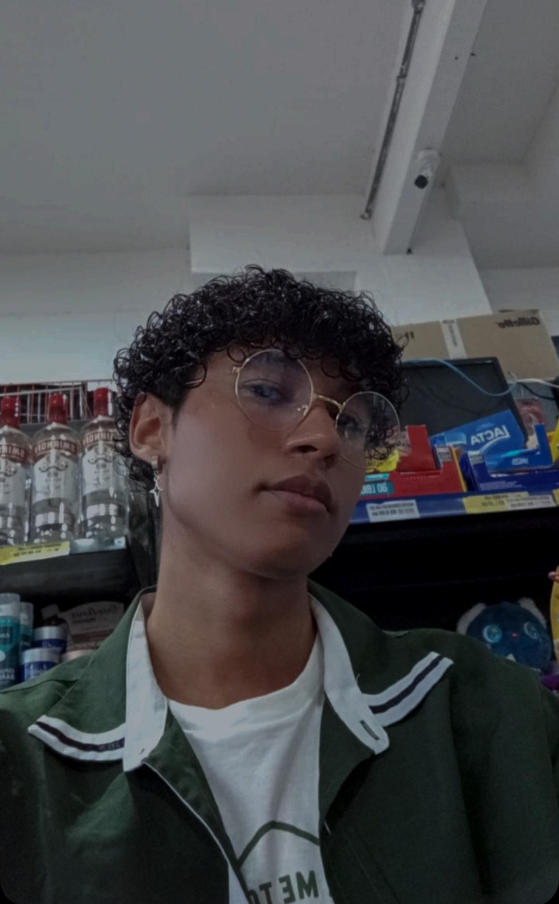

Me Conheça Melhor

Introdução
Neste artigo, você verá um pouco mais sobre mim, meus gostos, meus desgostos, e o que me inspira no dia a dia. Vou compartilhar minhas paixões, o que me motiva, e talvez até algumas curiosidades que poucos conhecem. Espero que ao final, você consiga entender um pouco mais sobre quem eu sou.(acesse meu perfil do Instagram clicando na minha foto ao lado.)
Abaixo, você encontrará alguns tópicos, cada um com um resumo, todos focados em diferentes aspectos da minha vida. Esses tópicos foram selecionados para oferecer uma visão geral. Cada resumo proporciona uma breve introdução ao tema.
"Quem sou eu??" é uma pergunta que me faço todos os dias. Aqui, vou tentar responder a essa questão falando sobre minha vida, minhas experiências e as coisas que me influenciam. Vou compartilhar de onde venho, meus valores e o que me faz ser quem sou. Espero que essa introdução ajude você a entender um pouco mais sobre mim, além do que se vê à primeira vista.
Gostos e desgostos : Aqui vou tentar falar um pouco sobre as coisas que eu gosto e não gosto. O que a gente gosta ou não gosta diz muito sobre quem a gente é. Essas preferências mostram o que a gente valoriza e o que já vivemos. Compartilhando o que me agrada e o que me incomoda, espero que você possa me entender melhor. No fim das contas, essas preferências influenciam muito as escolhas que faço no meu dia a dia e ajudam a formar minha visão sobre o que é importante na vida.
Filmes, musicas, livros, hobies, artistas e jogos favoritos : Aqui vou falar sobre tudo que mais amo, desde meu artista favorito até o lugar que mais gosto de ir. Vou explorar cada detalhe das coisas que me trazem alegria e inspiração, desde a música que toca minha alma, os livros que me transportam para outros mundos, até as paisagens que me fazem sentir em paz. Este é um espaço para compartilhar os momentos, pessoas e lugares que fazem parte da minha vida, que moldam quem eu sou e que tornam cada dia mais especial.
Expêrincias Profissionais : Aqui vou falar sobre minhas experiências profissionais e minhas expectativas futuras. Vou compartilhar como cada vivência contribuiu para meu crescimento e moldou as habilidades que possuo hoje. Além disso, vou explorar as metas que pretendo alcançar, revelando o caminho que desejo seguir na minha carreira. Cada passo dado até agora me preparou para os desafios que estou pronto para enfrentar no próximo capítulo da minha vida.
Bônus : Aqui vou falar brevemente algumas curiosidades sobre mim.